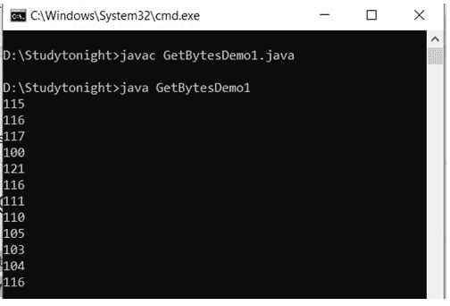

Java String类函数
原文：https://www.studytonight.com/java/string-class-functions.php
下面指定的方法是 Java 中String类最常用的一些方法。为了更好地理解，我们将借助小代码示例来学习每种方法。
charAt()方法
字符串charAt()函数返回位于指定索引处的字符。
public class Demo {
public static void main(String[] args) {
String str = "studytonight";
System.out.println(str.charAt(2));
}
}
输出: u
注意:字符串的索引从 0 开始，因此str.charAt(2)表示字符串的第三个字符。
equalsIgnoreCase()方法
String equalsIgnoreCase()确定两个 String 相等，忽略它们的大小写(这个方法大小写无关紧要)。
public class Demo {
public static void main(String[] args) {
String str = "java";
System.out.println(str.equalsIgnoreCase("JAVA"));
}
}
真实的
indexOf()方法
String indexOf()方法返回子串或字符第一次出现的索引。indexOf()方法有四种重载方法:
int indexOf(String str):返回指定子串第一次出现的字符串内的索引。int indexOf(int ch, int fromIndex):返回指定字符第一次出现的字符串内的索引，从指定的索引开始搜索。int indexOf(int ch):返回指定字符第一次出现的字符串内的索引。int indexOf(String str, int fromIndex):从指定的索引开始，返回指定子串第一次出现的字符串内的索引。
示例:
public class StudyTonight {
public static void main(String[] args) {
String str="StudyTonight";
System.out.println(str.indexOf('u')); //3rd form
System.out.println(str.indexOf('t', 3)); //2nd form
String subString="Ton";
System.out.println(str.indexOf(subString)); //1st form
System.out.println(str.indexOf(subString,7)); //4th form
}
}
2 11 5 -1
注意: -1 表示在给定字符串中找不到子字符串/字符。
length()方法
字符串length()函数返回字符串中的字符数。
public class Demo {
public static void main(String[] args) {
String str = "Count me";
System.out.println(str.length());
}
}
eight
replace()方法
字符串replace()方法用指定的新字符替换出现的字符。
public class Demo {
public static void main(String[] args) {
String str = "Change me";
System.out.println(str.replace('m','M'));
}
}
;
改变我
substring()方法
String substring()方法返回字符串的一部分。substring()方法有两种覆盖方法。
1.公共字符串子字符串(int begin)；
2.公共字符串子串(int begin，int end)；
第一个参数表示子树的起点。如果仅用一个参数调用substring()方法，则子树返回从指定起点到原始字符串末尾的字符。
如果用两个参数调用方法，第二个参数指定子字符串的结束点。
public class Demo {
public static void main(String[] args) {
String str = "0123456789";
System.out.println(str.substring(4));
System.out.println(str.substring(4,7));
}
}
456789 456
toLowerCase()方法
String toLowerCase()方法返回将所有大写字符转换为小写的字符串。
public class Demo {
public static void main(String[] args) {
String str = "ABCDEF";
System.out.println(str.toLowerCase());
}
}
爵士摇滚
toUpperCase()方法
此方法返回将所有小写字符改为大写的字符串。
public class Demo {
public static void main(String[] args) {
String str = "abcdef";
System.out.println(str.toUpperCase());
}
}
爵士摇滚
valueOf()方法
String类对所有原始数据类型和对象类型使用重载版本的valueOf()方法。
注意: valueOf()功能用于将原始数据类型转换为字符串。
public class Demo {
public static void main(String[] args) {
int num = 35;
String s1 = String.valueOf(num); //converting int to String
System.out.println(s1);
System.out.println("type of num is: "+s1.getClass().getName());
}
}
35 num 的类型是:java.lang.String
toString()方法
String toString()方法返回一个对象的字符串表示。它在 Object 类中声明，因此可以被任何 java 类覆盖。(对象类是所有 java 类的超级类)。
public class Car {
public static void main(String args[])
{
Car c = new Car();
System.out.println(c);
}
public String toString()
{
return "This is my car object";
}
}
这是我的汽车物件
每当我们试图打印 Car 类的任何对象时，都会调用其toString()函数。
注意:如果我们不覆盖toString()方法直接打印对象，那么它会打印包含一些 hashcode 的对象 id。
trim()方法
此方法返回一个字符串，该字符串中的任何前导空格和尾随空格都已被删除。
public class Demo {
public static void main(String[] args) {
String str = " hello ";
System.out.println(str.trim());
}
}
你好
contains()方法
字符串contains()方法用于检查给定字符串中的字符序列。如果找到一个字符串序列，则返回 true，否则返回 false。
public class Demo {
public static void main(String[] args) {
String a = "Hello welcome to studytonight.com";
boolean b = a.contains("studytonight.com");
System.out.println(b);
System.out.println(a.contains("javatpoint"));
}
}
真假
endsWith()方法
字符串endsWith()方法用于检查字符串是否以给定的后缀结束。当后缀与字符串匹配时返回 true，否则返回 false。
public class Demo {
public static void main(String[] args) {
String a="Hello welcome to studytonight.com";
System.out.println(a.endsWith("m"));
System.out.println(a.endsWith("com"));
}
}
真实真实
format()方法
弦format()是一种弦法。它用于给定字符串的格式。
以下是格式说明符及其数据类型:
| 格式规范 | 数据类型 | | %a | 浮点 | | %b | 任何类型 | | %c | 性格；角色；字母 | | %d | 整数 | | %e | 浮点 | | %f | 浮点 | | %g | 浮点 | | %h | 任何类型 | | %n | 没有人 | | %o | 整数 | | %s | 任何类型 | | %t | 日期/时间 | | %x | 整数 |
public class Demo {
public static void main(String[] args) {
String a1 = String.format("%d", 125);
String a2 = String.format("%s", "studytonight");
String a3 = String.format("%f", 125.00);
String a4 = String.format("%x", 125);
String a5 = String.format("%c", 'a');
System.out.println("Integer Value: "+a1);
System.out.println("String Value: "+a2);
System.out.println("Float Value: "+a3);
System.out.println("Hexadecimal Value: "+a4);
System.out.println("Char Value: "+a5);
}
}
整数值:125 字符串值:今晚研究浮点值:125.000000 十六进制值:7d 字符值:a
getBytes()方法
字符串getBytes()方法用于获取指定字符串的字节数组。
public class Demo {
public static void main(String[] args) {
String a="studytonight";
byte[] b=a.getBytes();
for(int i=0;i<b.length;i++)
{
System.out.println(b[i]);
}
}
}

getChars()方法
String getChars()方法用于将字符串的内容复制到一个 char 数组中。
public class Demo {
public static void main(String[] args) {
String a= new String("Hello Welcome to studytonight.com");
char[] ch = new char[16];
try
{
a.getChars(6, 12, ch, 0);
System.out.println(ch);
}
catch(Exception ex)
{
System.out.println(ex);
}
}
}
欢迎
isEmpty()方法
字符串isEmpty()方法用于检查字符串是否为空。当字符串长度为零时返回 true，否则返回 false。
public class IsEmptyDemo1
{
public static void main(String args[])
{
String a="";
String b="studytonight";
System.out.println(a.isEmpty());
System.out.println(b.isEmpty());
}
}
真假
join()方法
String join()方法用于连接带有给定分隔符的字符串。给定的分隔符与每个元素一起复制
public class JoinDemo1
{
public static void main(String[] args)
{
String s = String.join("*","Welcome to studytonight.com");
System.out.println(s);
String date1 = String.join("/","23","01","2020");
System.out.println("Date: "+date1);
String time1 = String.join(":", "2","39","10");
System.out.println("Time: "+time1);
}
}
欢迎来到 studytonight.com 日期:2020 年 1 月 23 日时间:2:39:10
startsWith()方法
String startsWith()是 java 中的一个字符串方法。它用于检查给定的字符串是否以给定的前缀开头。当前缀匹配字符串时返回真，否则返回假。
public class Demo {
public static void main(String[] args) {
String str = "studytonight";
System.out.println(str.startsWith("s"));
System.out.println(str.startsWith("t"));
System.out.println(str.startsWith("study",1));
}
}
真假假
字符串方法列表
| 方法 | 描述 | | char charAt(内部索引) | 它返回特定索引的字符值 | | int 长度() | 它返回字符串长度 | | 静态字符串格式(字符串格式，对象...参数) | 它返回一个格式化的字符串。 | | 静态字符串格式(语言环境，字符串格式，对象...参数) | 它返回给定区域设置的格式化字符串。 | | 字符串子字符串（int startIndex） | 它返回给定开始索引的子字符串。 | | string substr(int begin index，int endIndex) | 它返回给定开始索引和结束索引的子字符串。 | | 布尔包含字符序列 | 匹配字符值序列后返回真或假。 | | 静态字符串连接(字符序列分隔符，字符序列...元素) | 它返回一个连接的字符串。 | | 静态字符串连接(字符序列分隔符，可迭代 extends CharSequence>元素) | 它返回一个连接的字符串。 | | 布尔等于(另一个对象) | 它检查字符串与给定对象的相等性。 | | boolean isEmpty() | 它检查字符串是否为空。 | | String concat（String str） | 它连接指定的字符串。 | | 字符串替换(旧字符，新字符) | 它会替换所有出现的指定字符值。 | | 字符串替换(字符序列旧，字符序列新) | 它替换指定字符序列的所有出现。 | | 静态字符串 equalsIgnoreCase(另一个字符串) | 它比较另一个字符串。它不检查情况。 | | 字符串[]拆分(字符串正则表达式) | 它返回一个匹配正则表达式的拆分字符串。 | | 字符串[]拆分(字符串正则表达式，整数限制) | 它返回一个匹配正则表达式和 limit 的拆分字符串。 | | 内部字符串（） | 它返回一个中间字符串。 | | int indexOf（int ch） | 它返回指定的字符值索引。 | | int indexOf（int ch， int fromIndex） | 它从给定的索引开始返回指定的字符值索引。 | | int indexOf（String substring） | 它返回指定的子字符串索引。 | | int indexOf（String substring， int fromIndex） | 它从给定的索引开始返回指定的子字符串索引。 | | String toLowerCase（） | 它返回一个小写的字符串。 | | tolowercase 字符串(本地 l) | 它使用指定的区域设置返回小写字符串。 | | String toUpperCase() | 它返回一个大写的字符串。 | | toUpperCase 字符串(本地 l) | 它使用指定的区域设置返回大写字符串。 | | 字符串修剪() | 它删除该字符串的开头和结尾空格。 | | 静态字符串值(整数值) | 它将给定类型转换为字符串。这是一个重载方法。 |